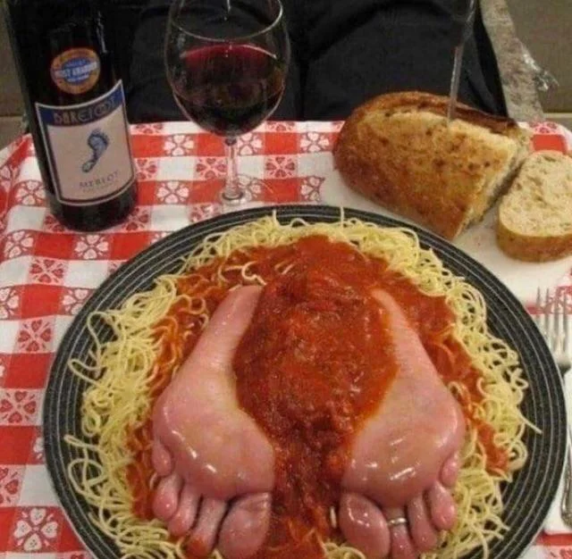

<!DOCTYPE html>
<html lang="en">
    <meta data="UTF-8">
    <title>Odin Recipes</title>
</html>
<body>
    <h1>Spaghetti</h1>
    
    <h3>Number 15, Olive Garden foot spaghetti</h3>
    <ul>
        <li>1 Gram Flour</li>
        <li>1/2 Cup Milk</li>
        <li>52 Egss yolks</li>
        <li>20 Whole Green Tomatoes</li>
        <li>FEET</li>
    </ul>
    <ol>
        <li>Seperate yolk from egg whites.</li>
        <li>Make a mount of flour, with a divot in the middle. Pour all the egg yolks into the flour. Mix until combined.</li>
        <li>Grab all your tomatoes and stomp on them until fully broken down.</li>
        <li>Plate your foot.</li>
    </ol>
</body>